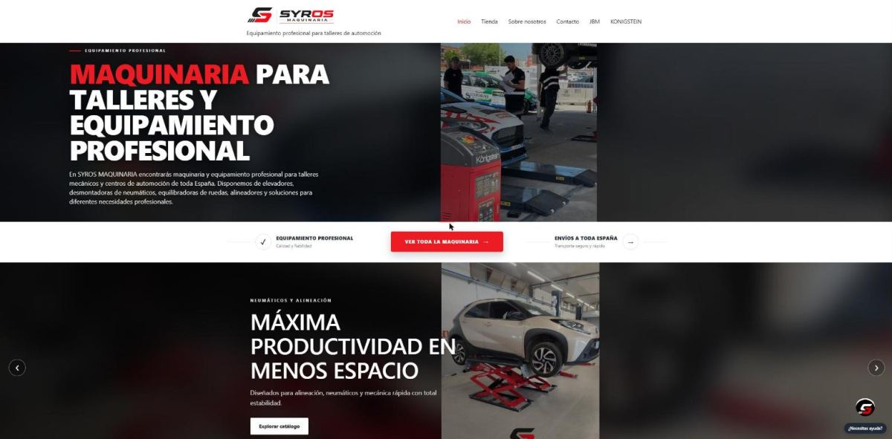
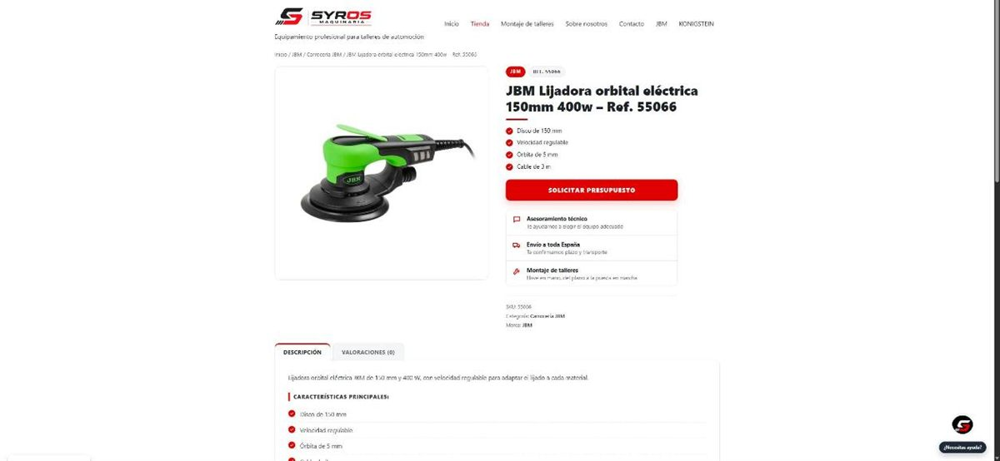
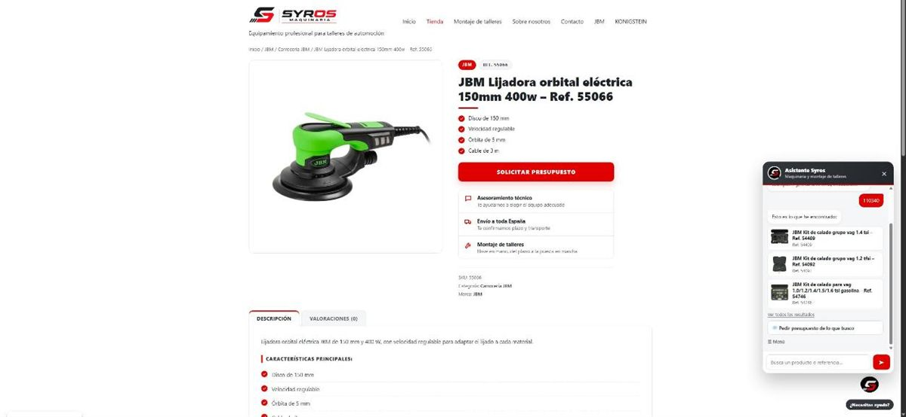
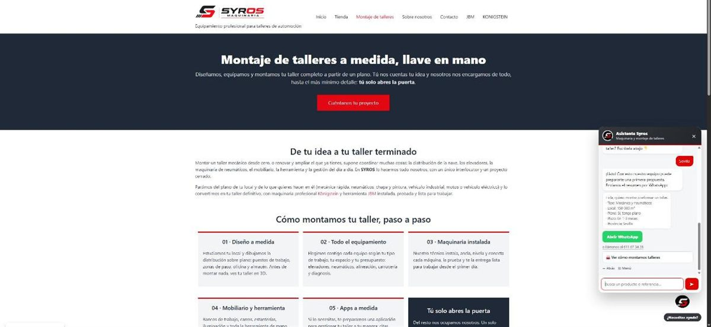
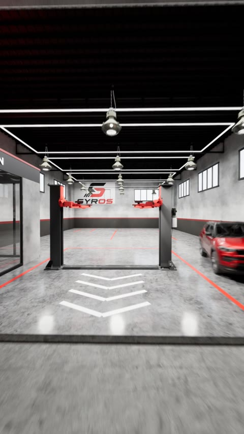
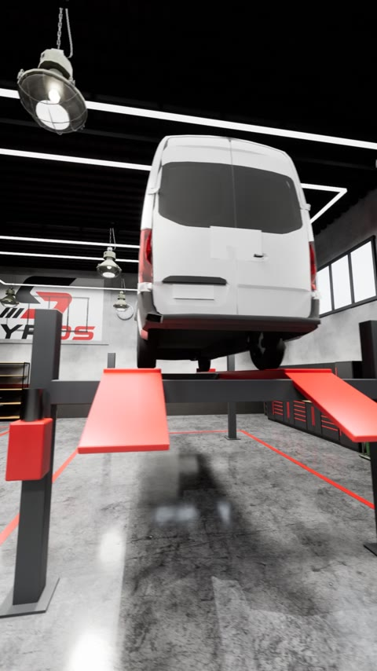
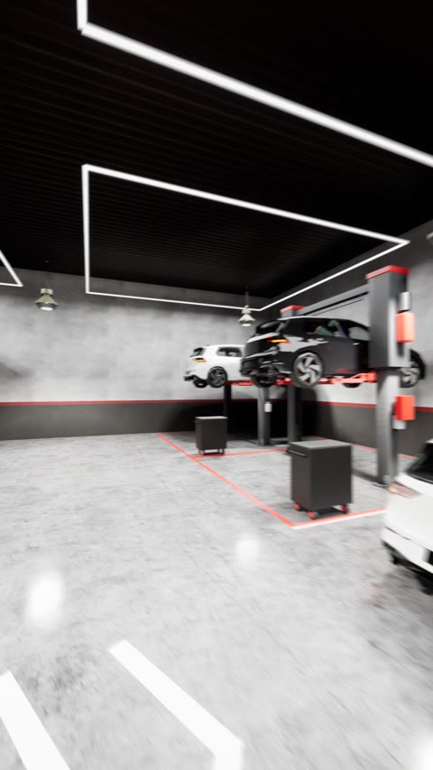

Soy David Molero. Monto webs y tiendas con WordPress y WooCommerce, me encargo de su SEO técnico, automatizo catálogos de miles de productos y creo contenido 3D y vídeo para venderlos mejor.
Un proyecto Full Stack propio con el código abierto en GitHub y mi trabajo principal: la web y la tienda online de Syros Maquinaria, una empresa de Sevilla que distribuye maquinaria y monta talleres de automoción llave en mano. El código de Syros es privado porque pertenece a la empresa; de esos proyectos enseño el resultado y cómo los hice.
Aplicación web para que una empresa instaladora controle los elevadores que monta en talleres. Nace de mi trabajo como electromecánico: saber qué equipos tienen la revisión anual vencida y qué averías están pendientes.

Web corporativa y tienda de equipamiento para talleres, de principio a fin.

Rediseño de la página de producto de WooCommerce para que parezca la web de una empresa que monta talleres, no una plantilla.

Bot guiado que sustituyó a uno antiguo con enlaces rotos y textos desactualizados.

Tareas masivas hechas con scripts en el navegador y la API, sin tocar ficha a ficha.



Un taller virtual completo para los anuncios de la marca, en formato vertical para redes sociales.
Plugin de ejemplo que muestra en cada producto un botón para descargar su ficha técnica en PDF. Es una versión simplificada de la que uso en producción.
Ver el código →Lo que uso en el día a día y lo que he estudiado.
JavaScript · PHP · WordPress · WooCommerce · Elementor · API REST
Google Search Console · Google Analytics 4 · SEO técnico · datos estructurados · redirecciones 301
C# · .NET 10 · ASP.NET Core Web API · Entity Framework Core · JWT · xUnit · Java SE / EE · Spring · Hibernate
Angular · TypeScript · RxJS · HTML5 · CSS3 / SCSS · diseño responsive
SQL · MySQL / MariaDB · SQLite · Oracle (PL/SQL) · Git · GitHub · Swagger / OpenAPI
Blender · Unreal Engine 5 · Remotion (React) · FFmpeg
Mi formación en web, junto a mi experiencia como electromecánico, que me da una visión práctica de lo que necesita un taller.
Si buscas a alguien para tu web, tu tienda online o tu catálogo, escríbeme.